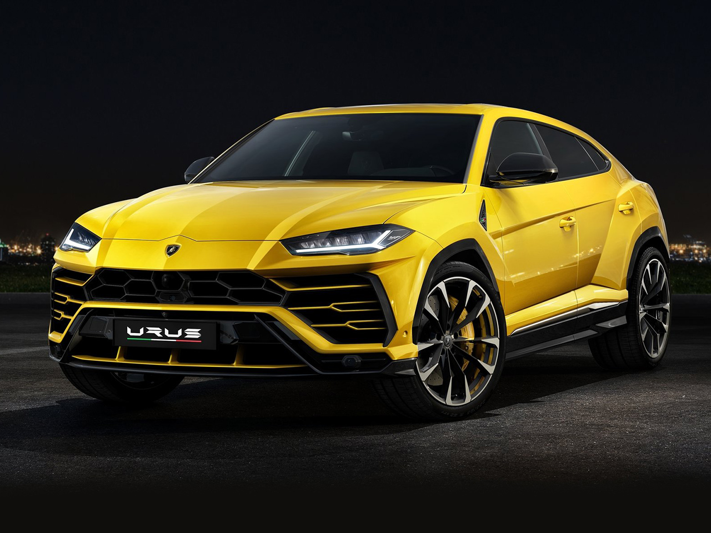

El Lamborghini Urus es el primer vehículo utilitario superdeportivo en todo el mundo que fusiona el alma de un coche superdeportivo y la funcionalidad de un SUV. Impulsado por un motor V8 biturbo de 4,0 litros que genera 650 CV de potencia y un par de 850 Nm, el Urus acelera de 0 a 100 km/h en 3,6 segundos y alcanza una velocidad máxima de 305 km/h. Diseño, rendimiento, dinámica de conducción y emoción al volante confluyen en un enfoque visionario impregnado del ADN Lamborghini más puro.
